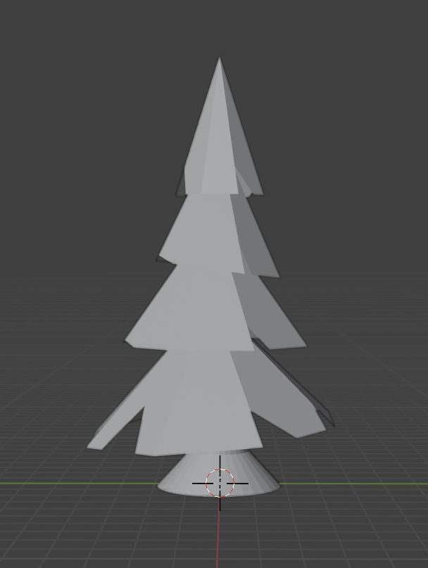
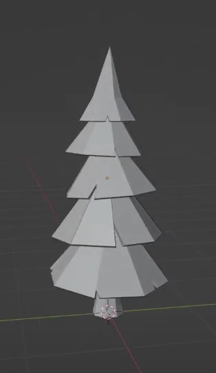
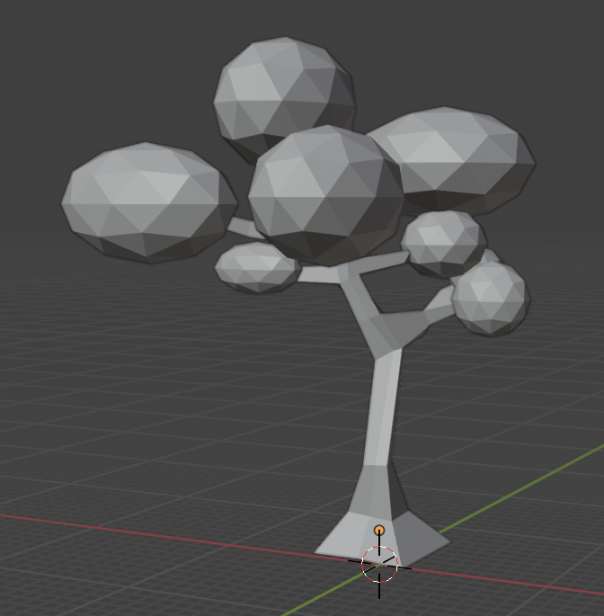
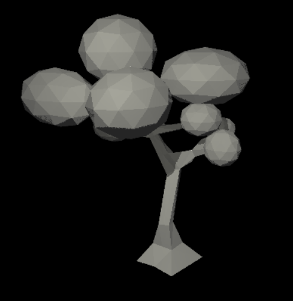

In Flight
Progress Summary
Summary of features
Feature
Adapted Points
Status
Mesh Design
5
Completed
Fog
5
Upcoming
Normal Mapping
10
Work in progress
Bézier Curves
10
Upcoming
Boids
20
Work in progress
Achieved Goals
Clemens Möbius
Marc Kallergis
Ondrej Zedka
Week 1 (Proposal)
Creating bird mesh & animating it in blender
Creating tree meshes
Implementing 3D boids algorithm & evolving bird position in test scene
Week 2 (Easter)
Created texture for bird mesh
Creating other meshes for forest environment<s
Tweaking bird animation in blender
Week 3
Mapping textures to meshes
Adding force to control global trajectory of boids
Animating birds in test scene using blender animation as support
Week 4
Milestone report
Static scene creation
Feature validation & showcases for report
Preliminary results
Results and state of the project :
We have made good progress on most of our planned tasks. We did however deviate somewhat from our plannification by prioritizing some tasks than while leaving other tasks for later. For now we have :
- A bird mesh and texture created by Clemens. This model was also animated in Blender by Clemens.
- Multiple meshes for trees and other decorative objects created by Marc.
- A complete working 3d model of Boid behavior implemented by Ondrej. An evolve function is in place so that actor movement can be controled by the Boid algorithm.
- Prototypes for controlling the general direction of the flock of birds, worked on by Marc.
- Texture applied to the bird meshes. This was done by Clemens.
- Animated birds (flapping their wings) in the scene. This was done by Ondrej by periodicly switching the meshes of the birds in the evolve function.
Feature validation
Mesh design
Implementation
We designed our meshes in Blender, mainly by following tutorials on youtube (Pine tree tutorial, Tree tutorial, Bird tutorial). These were very helpful as it was our first/second time working with Blender and helped us achieve a good visual result while managing the object complexity.
Validation

Our pine design in Blender 
Our pine mesh rendered by the project framework 
Pine in the youtube tutorial 
A second tree design in Blender 
Second tree design rendered by the project framework 
Tree design in the youtube tutorial 
Our bird mesh in Blender 
Our bird design rendered by the project framework 
Bird design in the youtube tutorial Note : The above objects are not exhaustive of all the meshes we created.
Number of hours each team member worked on the project.
Worked Hours
Clemens Möbius
Marc Kallergis
Ondrej Zedka
Week 1 (Proposal)
2
2
6
Week 2 (Easter)
3
3
2
Week 3
4
4
3
Week 4 (in progresss)
2
1
3
Workload and progress tracker
The pace and workload in genral match our planification. Some tasks took longer then anticipated, work in Blender for example was quite time intesive. The project is progressing well, we have found and implemented solutions for most of the key components of the final scene.
Schedule Update
Delays or unexpected issues
We currently don’t have any delays or unexpected issues. We prioritized completing the Boid algorithm and Bird animation over scene design, as these two elements are crucial for our vision of the project, and we wanted to make sure they are doable and working as envisioned. Moreover in the feedback to our proposal it was mentioned that the bird animation could be very challenging. This means that this week and week 5 we will have less work for the bird flock integration and more work in scene creation.
Work plan for the remaining weeks.
Updated Schedule
Clemens Möbius
Marc Kallergis
Ondrej Zedka
Week 5
Camera movement
Scene texturing
Bird Flock Integration
Week 6
Scene Polishing
Scene Polishing
Fog effect
Week 7
Feature validation & final report
Feature validation & final report
Feature validation & video